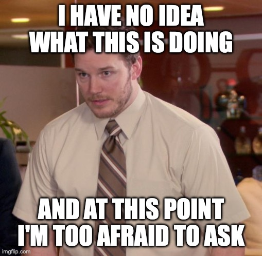

In what concerns the continuous evaluation solving exercises grade during the semester, you should submit until 23:59 of March 24th
(this exercise will still be available for submission after that deadline, but without couting towards your grade)
[to understand the context of this problem, you should read the class #03 exercise sheet]
 Numbers have personalities too! Some like to climb up in ascending order, while others prefer to slide down in a nice, orderly descent. But some numbers? Well, they just can't make up their mind and zigzag all over the place! Your task today is to determine if a number has its act together or if it's simply a chaotic mess.
Write a program that, given several integers, checks for each one if its digits are arranged in a strictly ascending or descending order, or if the number is unordered.
The first line of input contains an integer T, representing the number of test cases that follow.
Each of the following T lines contains one integer N, representing the number we want to check the digits.
The output should have exactly T lines, one per input test case.
Each of these lines should contain one of the following statements:
N: increasing if the digits are strictly increasing
N: decreasing if the digits are strictly decreasing
N: not ordered if the digits are not strictly increasing or decreasing
The following limits are guaranteed in all the test cases that will be given to your program:
| 1 ≤ T ≤ 10 | Number of test cases | |
| 10 ≤ N ≤ 109 | Number to check the digits |
| Example Input | Example Output |
4 1356 985 96753 122 |
1356: increasing 985: decreasing 96753: not ordered 122: not ordered |